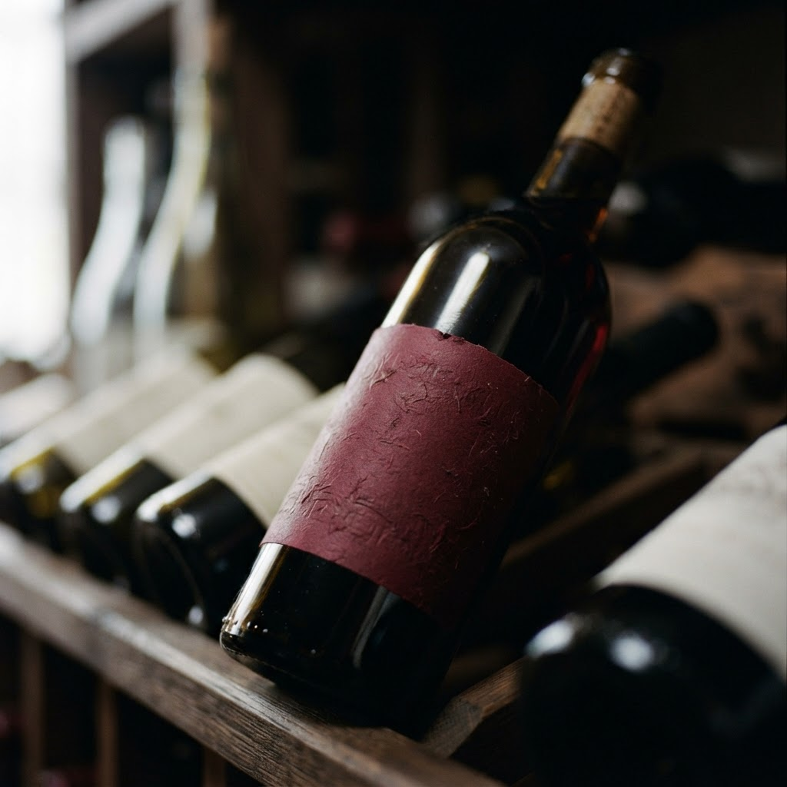
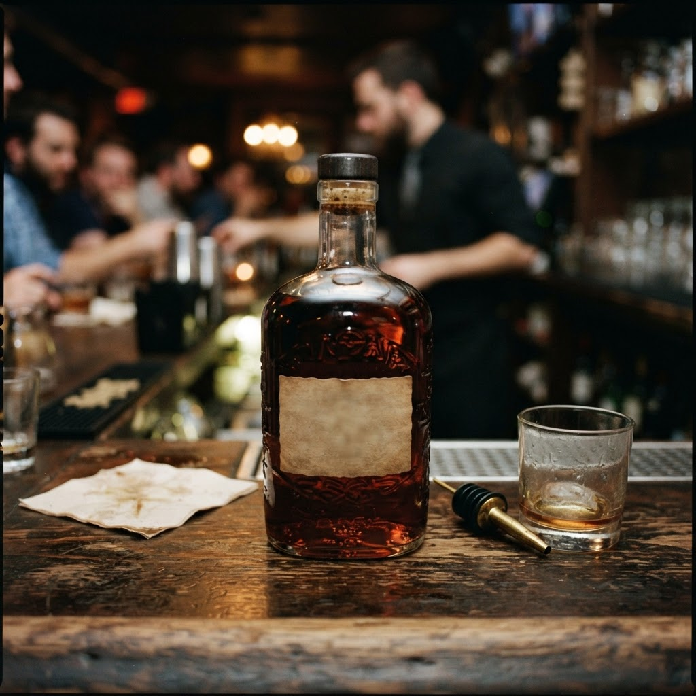
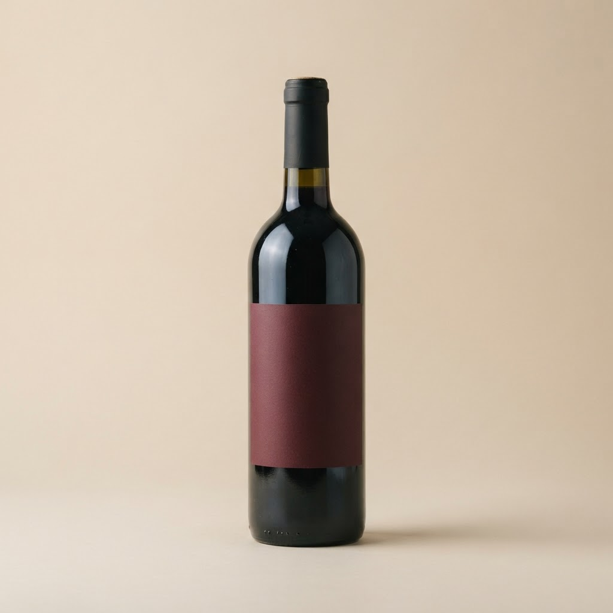

Резцов и партнёры — Адмиралтейский
Доставка алкоголя по Петербургу круглосуточно
Привозим вино, крепкий алкоголь, пиво и закуски по всем районам Санкт-Петербурга и в ближние пригороды: Мурино, Кудрово, Всеволожск, Шушары. Курьер приезжает за 40-60 минут, днём и ночью. Только для покупателей старше 18 лет, возраст проверяем при передаче заказа.
О нас
Небольшая петербургская служба доставки: свой склад на юге города, двенадцать курьеров на автомобилях и собственная диспетчерская. За месяц отвозим около четырёх тысяч заказов. Ассортимент более 1500 позиций: от российских вин до выдержанных коньяков и виски.
Частые вопросы
Доставляете ли ночью?
Да, работаем круглосуточно без выходных, ночью время доставки по городу 50-70 минут.
Можно ли заказать в пригород?
Да, возим в Мурино, Кудрово, Всеволожск, Шушары, Парголово и другие ближние пригороды, стоимость называем при заказе.
Контакты и время приёма
Принимаем заказы круглосуточно по телефону, в мессенджерах и через телеграм-бота. Склад и диспетчерская в Санкт-Петербурге, доставка по всем районам города и ближним пригородам.
Заказать доставку
Оформите заказ сейчас: привезём за 40-60 минут в любой район Петербурга, круглосуточно.
Призыв5 статей
Все статьи

Доставка вина спб 24 часа с доставкой в Адмиралтейском районеАдмиралтейский район с его историческими набережными и узкими улочками требует особого подхода к сервису. Когда наступает полночь, а винная карта дома пустее…
Доставка алкоголя спб 24 с доставкой в Адмиралтейском районеАдмиралтейский район славится своей исторической застройкой и плотными потоками людей даже глубокой ночью. Здесь актуальна доставка алкоголя спб 24 с доставк…
Сколько стоит купить вино с доставкой на дом спб в Адмиралтейском районеАдмиралтейский район — это лабиринты каналов и старинная архитектура, где вечерний отдых часто затягивается до глубокой ночи. Когда запасы заканчиваются, мы …Доставка алкоголя спб бесплатно с доставкой в Адмиралтейском районеАдмиралтейский район требует особого подхода: здесь узкие дворы и запутанная логистика, поэтому доставка алкоголя спб бесплатно должна быть филигранной. Мы о…